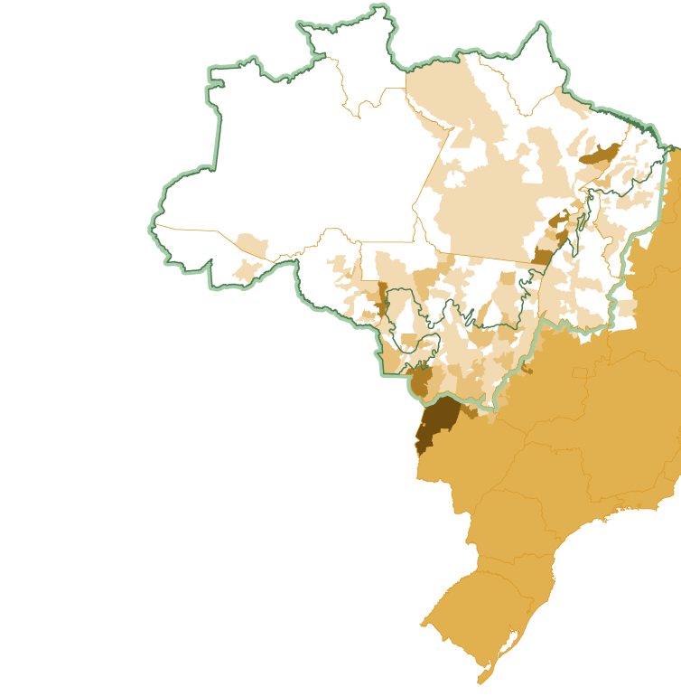
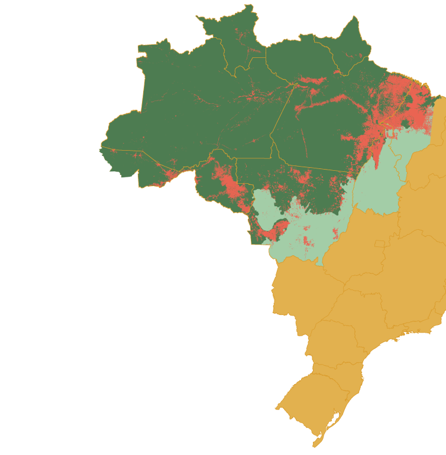
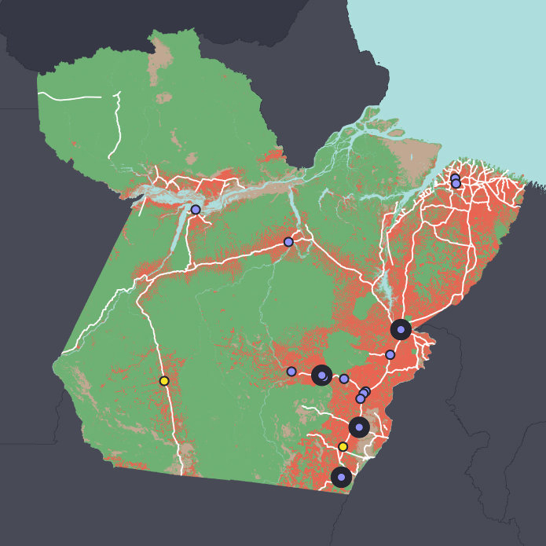

Beta
A Path Towards
Zero-Deforestation Cattle
Supply chain solutions offer unprecedented opportunities to reduce deforestation driven by cattle expansion in the Brazilian Amazon. Achieving that goal, at scale, will require coordinated support from the entire value chain.
Expansion of the Brazilian
cattle herd into the Amazon11
Fueled by domestic and international demand for beef and leather, cattle ranching has rapidly spread north-westwards across Brazil into the Amazon biome, which now supports nearly 60 million cattle, about one-third of the entire Brazilian herd.

Head of Cattle per Municipality
Patterns of forest cover loss in the Brazilian Amazon12
Forest loss in the Brazilian Amazon has followed a pattern, often referred to as the Arc of Deforestation, progressively spreading north-westwards into the forest frontier.

FURTHER READING FOR CHAPTER 1
➀ Agricultural Productivity Depends on Amazon Forests →
➁ Deforestation-based Production Contributes to Far Greater Emissions →
As one of the leading producers and exporters of beef and leather products, the Brazilian cattle sector is highly integrated into both domestic and international markets.
DOMESTIC
The majority (about 80%) of beef produced in Brazil is consumed by the domestic market. According to OECD-FAO 2014, Brazil is one of the leading beef consuming nations in the world, averaging about 25 kg of beef per capita per year, over three times the world average (6.5 kg/capita/year). Large multi-national retailers and global food and pet-food brands play a prominent role in the domestic market for beef products in Brazil.
Walker et al. 2013, estimates that about 26% of Brazilian leather and hides are consumed by the domestic market. Although the majority of production is exported, Brazil has significant processing and manufacturing sectors for leather-based products, such as automotive and aviation (upholstery), as well as footwear and apparel.
The overwhelming majority (about 99%) of tallow produced in Brazil is consumed by the domestic market, primarily for biodiesel. Based on estimates from FAO STAT and the Global Agricultural Network (GAIN), about 90% of all Brazilian tallow is used for biodiesel production. According to the U.S. Energy Information Administration (EIA), Brazil is the fourth largest producer of biodiesel in the world.
INTERNATIONAL
% US$
US$ (millions)
Top Importers
of Brazilian beef, 2014
% US$
US$ (millions)
Top Importers of Brazilian
Raw Leather/Hides, 2014
% US$
US$ (millions)
Top Importers of Brazilian
Tallow-Based Biodiesel Exports, 2013
FURTHER READING FOR CHAPTER 2
➀ Surge in Zero-Deforestation Commitments →
➁ Clandestine Market →
➂ Domestic Consumption and Export Markets →
Major slaughterhouses in the state of Pará in the Brazilian Amazon that have (and do not have) a zero-deforestation cattle agreement47
This figure shows federally inspected slaughterhouses in the state of Pará (Serviço de Inspeção Federal—SIF). Nearly 90% of these slaughterhouses are covered by zero-deforestation cattle agreements, including both the G4 and MPF-TAC (for more information, see READ MORE section). Four of these slaughterhouses (as indicated in the key) were analyzed by Gibbs et al. 2015.

Map from Gibbs et al. 2015
Slaughterhouse categories
G4 slaughterhouses included in study
Signed either TAC or G4 agreement
FURTHER READING FOR CHAPTER 3
➀ Severing the Link Between Deforestation & Cattle →
➁ The Brazilian Forest Code →
➂ Rural Environmental Registry System (CAR) →
The Study Region: Property Boundaries and Forest Cover of Supplying and Non-Supplying Ranches in Pará53
Pre-agreements
Post-agreements
(compliance)
Map from Gibbs et al. 2015
Deforestation (2010-2013)
Deforestation (2006-2009)
Suppliers that sold pre-agreement
These two maps show forest cover loss and the change in supplying properties to JBS slaughterhouses in Pará from before the agreements (prior to 2009) and after the agreements (2010 to 2013).
- Pre-agreement map shows supplying properties before the agreements and deforestation from 2006 to 2009.
- Post-agreement map shows supplying properties and deforestation after the agreement (2010 to 2013). This compliance map illustrates the change in JBS purchase criteria in response to the zero-deforestation agreements.
FURTHER READING FOR CHAPTER 4
➀ JBS Alters Purchase Criteria →
This diagram shows various supply chain actors, their roles throughout the production phases, and the complexities of monitoring and traceability.
G4 meatpackers have implemented effective monitoring systems to cover transactions with direct suppliers (Tier 1 ranches).
The movement of cattle can occur through various channels, including auctions, traders, and other middlemen.
Cattle can also move between indirect suppliers (ranch-to-ranch transfers) throughout all production phases, including breeding, rearing, and fattening.
Because most suppliers are not full-cycle ranches, which cover all production phases, there are significant challenges associated with monitoring and traceability of indirect suppliers (Tier 2 and Tier 3 ranches).
Cattle can also be sold via non-G4 supply chains, which have limited (if any) controls and monitoring systems for deforestation and illegal activities.
FURTHER READING FOR CHAPTER 5
➀ Complexities of the Cattle Supply Chain →
➁ A Guide to Solution-Oriented Options →
➂ Productive Capacity of Existing Pasture →
➃ Moderate Intensification →
Ranchers
G4 Meatpackers
Non-G4 Meatpackers
Retailers & Manufacturers
Government
Consumers
Banks & Investors
Photo © NWF/Pisco Del Gaiso
✕
Ranchers
- Avoid clearing remaining tracts of forest.
- Adopt moderate intensification practices (such as rotational grazing, fences, and grass mixtures) to improve productivity on existing pastures.
- Work towards legal compliance, including CAR registration and Legal Reserve (LR) minimums.
- Utilize market-based mechanisms (such as CRA and REDD+) to compensate and/or restore cleared areas.
✕
G4 Meatpackers
G4 Meatpackers (JBS, Marfrig, and Minerva)
- Start to address indirect suppliers. Taking action to address indirect suppliers will help close some of the current gaps in monitoring, reduce risks, and help ensure fully verified zero-deforestation supply chains.
- Increase the transparency of transaction information. Disclosing more information on the ranches which supply cattle to the meatpackers will help identify potential gaps in monitoring, further reduce potential risk exposure, and provide valuable support for efforts aimed at expanding monitoring to indirect suppliers.
✕
Non-G4 Meatpackers
Other meatpackers (non-G4) in the Brazilian Amazon and elsewhere in the topics
- Commit to zero-deforestation, use monitoring systems to exclude purchases from ranches with deforestation, track cattle between supplying ranches, and increase the transparency of transaction information.
✕
Retailers & Manufacturers
- Incentivize support for verified zero-deforestation beef, leather, tallow, and other cattle-derived products.
- Preferentially source from meatpackers who: (1) have made commitments to zero-deforestation production, (2) use monitoring and tracking systems to ensure fully verified zero-deforestation production, (3) increase the transparency of their transaction information with supplying ranches, and (4) publically disclose their performance through third-party independent audits.
- Participate in the GRSB-GTPS Joint Working Group on Forests (JWG) to build collaborative solutions with other supply chain actors and to scale up verified zero-deforestation beef, leather, tallow, and other cattle-derived products.
✕
Government
- Increase transparency of data regarding the transportation of cattle (Guia de Transporte Animal, or GTA) and the CAR registry. Disclosing more information on the movement of cattle will help support efforts aimed at expanding monitoring and traceability to indirect suppliers in the supply chain.
- Create policies and incentives focused on the adoption of nationwide traceability and monitoring systems, leveling the playing field in the Brazilian cattle sector.
- Accelerate CAR adoption and support a CAR verification process to improve the accuracy and reliability of information.
- Support efforts to improve technical assistance, training and education for ranchers.
- Incentivize adoption of moderate intensification practices that improve productivity on existing pastures, while reducing incentives for and discouraging expansion of agriculture into forested regions.
- Promote more streamlined processes for the application for and allocation of credit and other finance for sustainable ranching practices.
✕
Consumers
- Preferentially purchase from retailers that have commitments and show continuous progress towards verified zero-deforestation production. Check Supply-Change for news, information, and analysis on company commitments.
- Ask your favorite retailers and brands simple questions like:
- “From where do you source your beef or leather materials?”
- “Do you have a zero-deforestation policy that covers cattle products?”
✕
Banks & Investors
- Provide financial incentives and credit options that support the recovery of degraded pastures and the adoption moderate intensification practices and other land-use intensification strategies, such as crop-livestock-forest integration.
- Promote more streamlined processes for the application for and allocation of credit and other finance for sustainable ranching practices.
- Support incentives that encourage transparency, traceability and verification of supply chains.
About this site
This website was developed as a collaborative project between the National Wildlife Federation (NWF) and the Gibbs Land Use and Environment Lab (GLUE). The site aims to showcase how supply chain initiatives are supporting effective solutions for verified zero-deforestation beef, leather, and tallow production in the Brazilian Amazon. The site also highlights ways for supply chain actors to support continuous improvement and ensure that cattle products sourced from this region do not contribute to the loss of tropical forests. This website is intended to be a resource for procurement and sustainability professionals, and will continue to evolve as new research, data, and analysis becomes available.
For questions or comments, please contact: ZeroDeforestation@nwf.org
The National Wildlife Federation is the oldest and largest wildlife conservation and education organization in the United States, with nearly 6 million members and supporters and 49 state and territorial affiliates. The international division of NWF (International Wildlife Conservation), develops strategies to reduce the environmental impacts associated with large-scale agriculture, to help ensure that commodity production can meet the world’s needs without destroying forests or jeopardizing wildlife habitat.
The Gibbs Land Use and Environment Lab (GLUE) at the University of Wisconsin-Madison, is an academic research group dedicated to studying human-environment interactions. The researchers use maps, remote sensing, modeling, and commodity supply chain analysis combined with stakeholder interviews to understand how and why humans use land around the world. They are especially engaged in understanding the potential of emerging market-based solutions to reduce tropical deforestation, and work closely with policymakers, business leaders and non-governmental organizations.
Contributors & developers
Supporters
The research, views, and opinions presented on this website do not necessarily reflect the opinions or positions of organizations supporting this site.
The Amazon biome: Dense tropical moist forest. Harbors over 10% of the species in the world. Covers 6.7 million km2. Spans eight countries (Brazil, Peru, Colombia, Venezuela, Ecuador, Bolivia, Guyana, and Suriname) and French Guiana.
Direct suppliers (or Tier 1 ranches), are properties that sell cattle to meatpackers/ slaughterhouses. Direct suppliers are typically fattening (or finishing) ranches, which cover the final phases of the production lifecycle.
Indirect suppliers (or Tier 2 and Tier 3) are properties that do not sell cattle to the meatpacker/ slaughterhouse, but rather sell, trade, and transfer cattle to other ranches throughout the production lifecycle. Indirect suppliers typically cover earlier production stages, including breeding and rearing operations, such as cow-calf systems.
Gibbs, H.K., Munger, J., L’Roe, J., Barreto, P., Pereira, R., Christie, M., Amaral, T. and Walker, N.F. (2015). Did Ranchers and Slaughterhouses Respond to Zero-Deforestation Agreements in the Brazilian Amazon? Conservation Letters.
2. Bustamente, M.M.C., et al. 2012. Estimating greenhouse gas emissions from cattle raising in Brazil. Climate Change. Vol. 115, Issue 3-4, 559-577.
5.
Gibbs, H.K., Munger, J., L’Roe, J., Barreto, P., Pereira, R., Christie, M., Amaral, T. and Walker, N.F. (2015). Did Ranchers and Slaughterhouses Respond to Zero-Deforestation Agreements in the Brazilian Amazon? Conservation Letters.
11.
Gibbs, H.K., Munger, J., L’Roe, J., Barreto, P., Pereira, R., Christie, M., Amaral, T. and Walker, N.F. (2015). Did Ranchers and Slaughterhouses Respond to Zero-Deforestation Agreements in the Brazilian Amazon? Conservation Letters.
12.
Gibbs, H.K., Munger, J., L’Roe, J., Barreto, P., Pereira, R., Christie, M., Amaral, T. and Walker, N.F. (2015). Did Ranchers and Slaughterhouses Respond to Zero-Deforestation Agreements in the Brazilian Amazon? Conservation Letters.
44.
Gibbs, H.K., Munger, J., L’Roe, J., Barreto, P., Pereira, R., Christie, M., Amaral, T. and Walker, N.F. (2015). Did Ranchers and Slaughterhouses Respond to Zero-Deforestation Agreements in the Brazilian Amazon? Conservation Letters.
45.
Gibbs, H.K., Munger, J., L’Roe, J., Barreto, P., Pereira, R., Christie, M., Amaral, T. and Walker, N.F. (2015). Did Ranchers and Slaughterhouses Respond to Zero-Deforestation Agreements in the Brazilian Amazon? Conservation Letters.
46.
Gibbs, H.K., Munger, J., L’Roe, J., Barreto, P., Pereira, R., Christie, M., Amaral, T. and Walker, N.F. (2015). Did Ranchers and Slaughterhouses Respond to Zero-Deforestation Agreements in the Brazilian Amazon? Conservation Letters.
47.
Gibbs, H.K., Munger, J., L’Roe, J., Barreto, P., Pereira, R., Christie, M., Amaral, T. and Walker, N.F. (2015). Did Ranchers and Slaughterhouses Respond to Zero-Deforestation Agreements in the Brazilian Amazon? Conservation Letters.
50.
Gibbs, H.K., Munger, J., L’Roe, J., Barreto, P., Pereira, R., Christie, M., Amaral, T. and Walker, N.F. (2015). Did Ranchers and Slaughterhouses Respond to Zero-Deforestation Agreements in the Brazilian Amazon? Conservation Letters.
51.
Gibbs, H.K., Munger, J., L’Roe, J., Barreto, P., Pereira, R., Christie, M., Amaral, T. and Walker, N.F. (2015). Did Ranchers and Slaughterhouses Respond to Zero-Deforestation Agreements in the Brazilian Amazon? Conservation Letters.
52.
Gibbs, H.K., Munger, J., L’Roe, J., Barreto, P., Pereira, R., Christie, M., Amaral, T. and Walker, N.F. (2015). Did Ranchers and Slaughterhouses Respond to Zero-Deforestation Agreements in the Brazilian Amazon? Conservation Letters.
53.
Gibbs, H.K., Munger, J., L’Roe, J., Barreto, P., Pereira, R., Christie, M., Amaral, T. and Walker, N.F. (2015). Did Ranchers and Slaughterhouses Respond to Zero-Deforestation Agreements in the Brazilian Amazon? Conservation Letters.